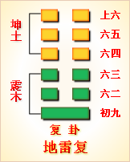

<!DOCTYPE html PUBLIC "-//W3C//DTD XHTML 1.0 Transitional//EN" "http://www.w3.org/TR/xhtml1/DTD/xhtml1-transitional.dtd">

<html xmlns="http://www.w3.org/1999/xhtml">
<head>
<meta content="text/html; charset=utf-8" http-equiv="Content-Type"/>
<title>周易第二十四卦：复卦 地雷�?坤上震下原文解释翻译-周易-国学�?/title>
<meta content="周易,复卦,地雷�?坤上震下" name="keywords"/>
<meta content="周易,复卦,地雷�?坤上震下，周易第二十四卦：复�?地雷�?坤上震下解释翻译�?�?地雷复）坤上震下 《复》：亨。出入无疾。朋来无咎。反覆其道，七日来复，利有攸往�?初九，不远复，无祗悔，元吉�?六二，休复，吉�?六三，频复，厉，无咎�?六四，中行独" name="description"/>
<link href="css.css" media="screen" rel="stylesheet" type="text/css"/>
</head>
<body>
<div class="gxlayout">
</div>
<div class="gxlayout">
<div class="ihead">
<div class="title"><a>周易</a></div>
<ul class="more fl">
<li>当前位置:<a>国学梦首�?/a> &gt; <a>国学经典</a> &gt; <a>经部</a> &gt; <a>四书五经</a> &gt; <a>周易</a> &gt;  周易第二十四卦：复卦 地雷�?坤上震下原文解释翻译</li>
</ul>
</div>
<div class="gxbl fl">
<div class="latitle">

<h1>周易第二十四卦：复卦 地雷�?坤上震下</h1>
<div class="lainfo"><span>作者：佚名</span> <span>全集�?a>周易</a></span> <span>来源：网�?/span> <span>[<a rel="nofollow" target="_blank">挑错/完善</a>]</span></div>
</div>
<div class="lacontent">
<div class="clearfix"></div>
<!--<!-- allowfullscreen="" frameborder="0" height="36" src="http://www.ximalaya.com/swf/sound/yellow.swf?id=2311183&amp;auto=true" width="260"></iframe>-->
<p style="text-align:center"></p>
<p style="text-align:center"><a>周易第二十四卦详�?/a></p>
<p style="text-align:center"><a>第二十四卦初九爻详解</a>　<a>第二十四卦六二爻详解</a>　<a>第二十四卦六三爻详解</a></p>
<p style="text-align:center"><a>第二十四卦六四爻详解</a>　<a>第二十四卦六五爻详解</a>　<a>第二十四卦上六爻详解</a></p>
<p><strong><a target="_blank">周易</a>第二十四�?�?地雷�?坤上震下</strong></p>
<p>复：亨。出入无疾，朋来无咎。反复其道，七日来复，利有攸往�?/p>
<p>彖曰：复�?刚反，动而以顺行，是以出入无疾，朋来无咎。反复其道，七日来复，天行也。利有攸往，刚长也。复其见天地之心�?</p>
<p>象曰：雷在地中，�?先王以至日闭关，商旅不行，后不省方�?/p>
<p>初九：不复远，无�?悔，元吉。象曰：不远之复，以修身也�?/p>
<p>六二：休复，吉。象曰：休复之吉，以下仁也�?/p>
<p>六三：频复，厉无咎。象曰：频复之厉，义无咎也�?/p>
<p>六四：中行独复。象曰：中行独复，以从道也�?/p>
<p>六五：敦复，无悔。象曰：敦复无悔，中以自考也�?/p>
<p>上六：迷复，凶，有灾眚。用行师，终有大败，以其国君，凶;至于十年，不克征。象曰：迷复之凶，反君道也�?/p>
<p><strong><a href="24_复卦.html" target="_blank">复卦</a>卦象，地雷复卦的象征意义</strong></p>
<p>复卦，本卦是异卦相叠�?a href="51_震卦.html" target="_blank">震卦</a>在下�?a href="02_坤卦.html" target="_blank">坤卦</a>在上。震为雷、为�?坤为地、为顺，动则顺，顺其自然。动在顺中，内阳外阴，循序运动，进退自如，利于前震为雷，为内�?坤为地，为上卦。地内有雷，意味着雷声一震，大地松动，万物萌生。复，有复兴和回归之意，是事物新生的转折点。从卦象上看，除第一爻为阳外，余爻皆为阴，似有太阳从地平线的一端升起的景象。复卦代表的节气�?a target="_blank">冬至</a>，正如�?a target="_blank">冬天</a>来了�?a target="_blank">春天</a>还会远吗?”，复卦代表阳性力量复兴而阴性元素衰退，长夜过后太阳升起，复卦启示去而复回和失而复行的方法�?a target="_blank">哲理</a>，并告诫人们：发现错误就是敢紧复归正道，这样才能吉祥。若是执迷不悟，就会产生灾祸�?/p>
<p>复卦位于<a href="23_剥卦.html" target="_blank">剥卦</a>之后，《序卦》之中这样说道：“物不可以终尽，剥穷上反下，故受之以复。”剥卦走到极点，阳爻又须回到底下重新开始。复卦为剥卦的覆卦，称作“由剥而复”，是“一阳复始”的局面，大地重现生机�?/p>
<p>复卦启示了寓动于顺的道理，属于中中卦。《象》中对此卦的评断是：马氏太公不相合，世人占之忧疑多，恩人无义反为怨，是非平地起风波�?/p>
<p>此卦卦名为复。“复”在《说文》中的解释是：“复，往来也。”可见复的意思是返回、回来的意思。前�?a href="11_泰卦.html" target="_blank">泰卦</a>的九三爻说“无往不复”，说的便是没有一直往前走而不返回的，事物都有一个循环往复、周而复始的规律，前面剥卦群阴剥去阴爻，接下来便开始一阳复生。所以剥卦的下面是复卦。这正如《序卦传》所说：“物不可以终尽，剥穷上反下，故受之以复也。�?/p>
<p>从卦象上分析，复卦上卦为坤为地，下卦为震为雷，雷在地中便是复卦的卦象。也就是说此时天上还不会出现雷声，但惊雷已孕育于大地之中了�?/p>
<p>复卦最下面的一个阳爻，象征阳气的始生。复卦是十二消息卦之一，代表的节气为冬至。复卦六爻代�?a target="_blank">大雪</a>�?a target="_blank">小寒</a>的三十余天。五天一候，一爻代表一候。此时一阳来复，阳气重新有了生命，也象征正义又开始出现了古人云：春夏养阳，秋冬养阴。其所说的“春夏”便是指冬至�?a target="_blank">夏至</a>的这段时间。古人效法自然，从这一天开始补充自己体内的阳气�?/p>
<p>关键词：周易,复卦,地雷�?坤上震下</p>
<div class="clearfix"></div>
<div class="title"><div class="thot">解释翻译</div><span>[挑错/完善]</span></div><p><a href="24_复卦.html" target="_blank">复卦</a>：亨通。外出回家不会生病。赚了钱而没有灾祸。路上往返很快，七天就可以了。有利于出门�?/p>
<p>初九：没走多远就返回来了，没有大问题，大吉大利�?/p>
<p>六二：完满而归，吉利�?/p>
<p>六三：愁眉苦脸地回来，遇到了危险，却没有灾祸�?/p>
<p>六四：独自一人半路返回�?/p>
<p>六五：匆忙返回，没有大问题�?/p>
<p>上六：迷路难返，凶险，有灾难。出兵作战，结果将会大败�?并连累到国君，凶险。十年都不能恢复作战能力�?/p>
<div class="title"><div class="thot">注释出处</div><span>[请记住我�?国学�?www.guoxuemeng.com]</span></div><p>(1)复是本卦标题。复的意思是往返。全卦内容是讲行旅。“复”与内容有关，又是卦中多见词，所以用作标题�?/p>
<p>(2)朋：朋贝，指货币，钱财�?/p>
<p>(3)祗：大�?/p>
<p>(4)休：美满�?/p>
<p>(5)频：用作“颦”，意思是皱眉头�?/p>
<p>(6)中行：中途，半路�?/p>
<p>(7)敦：匆忙，急迫�?/p>
<p>(8)�?sheng)：灾 祸，过错�?/p>
<div class="clearfix"></div>
<div class="contextdhall clearfix">
<ul>
<li>上一篇：<a href="23_剥卦.html">周易第二十三卦：剥卦 山地�?艮上坤下</a> </li>
<li>下一篇：<a href="25_无妄�?html">周易第二十五卦：无妄�?天雷无妄 乾上震下</a> </li>
<li>全   文�?a>周易</a></li>
</ul>
</div>
</div>
<div class="clearfix mt20"></div>
</div>
</div>
<div class="clearfix mt20"></div>
<div class="gxlayout">
</div>
<script>
var _hmt = _hmt || [];
(function() {
  var hm = document.createElement("script");
  hm.src = "https://hm.baidu.com/hm.js?872034ded637616c5cf8e173a446bb0e";
  var s = document.getElementsByTagName("script")[0];
  s.parentNode.insertBefore(hm, s);
})();
</script>
</body>
</html>
